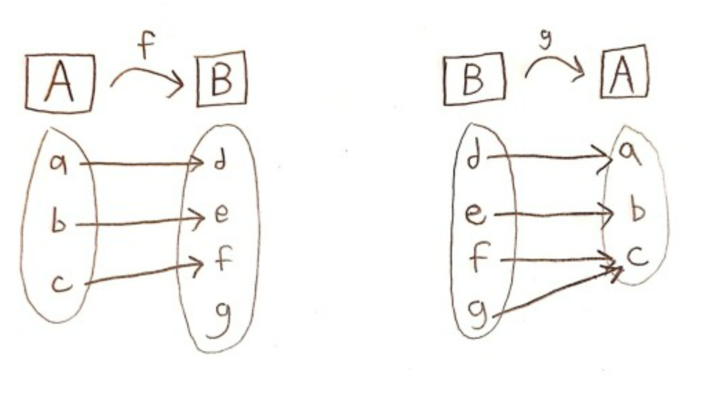
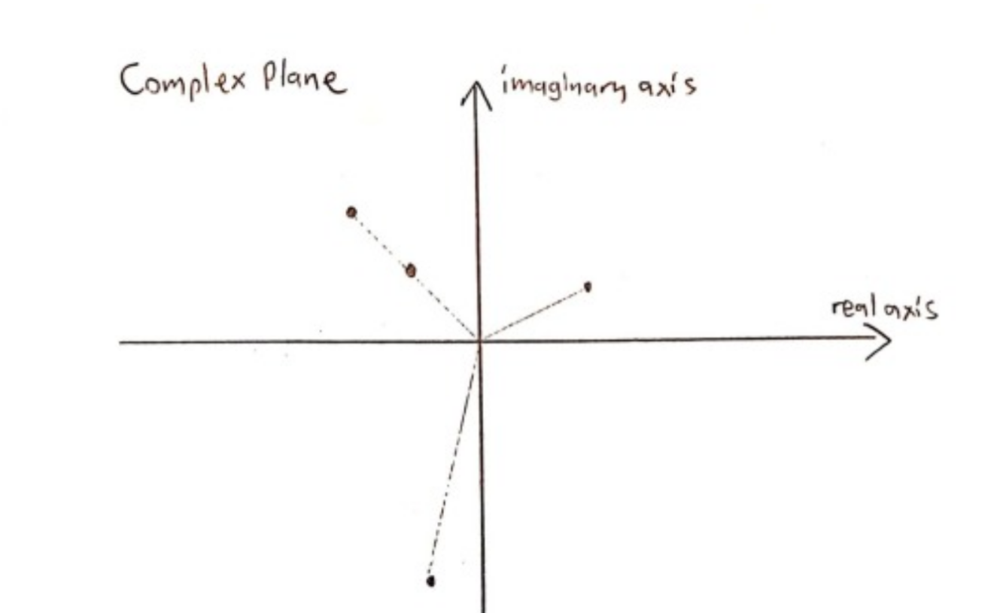
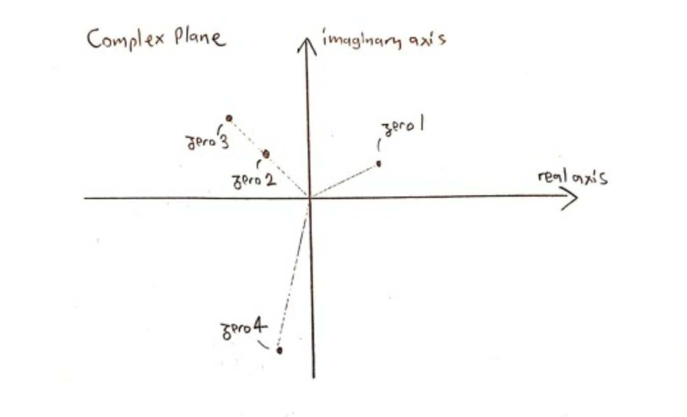

The shortest proof that there are countably many algebraic numbers
This article explores a technique for proving that certain sets are countable that I find so easy, fast and clever that I am surprised it isn’t used more often in casual mathematics. I will present it and then apply it to prove there are countably many algebraic numbers.
I use the following personal conventions:
\(\bullet\) - Definitions - Propositions I assume are true
\(\circ\) - Theorems – Propositions I deduce from the definitions
___________________
Section 0 - Cantor Set Theory (Prerequisites)
I will assume the readers of this article are already a bit familiar with Cantor Set Theory. If you are not, this video by TED-Ed is a nice accessible introduction:
The point of this section is to fix the definitions really clearly.
\(\bullet\:\aleph_0=\vert\mathbb{N}\vert\), meaning Aleph-0 (\(\aleph_0\)) is defined as the cardinal of the set of the natural numbers (\(\mathbb{N}\))
\(\bullet\) The set A is infinite if \(\vert A \vert \ge \aleph_0\) (\(\aleph_0\) being the smallest infinity)
\(\bullet\) The set A is countable if \(\vert A \vert \le \aleph_0\)
\(\bullet\) Given 2 sets \(A\) and \(B\), \(|A| = |B|\)(or they have the same cardinality) if I can find a “bijective” function from \(A\) to \(B\).
From experience, the next 2 definitions are less known from casual mathematicians, but are they crucial for this article.
● Given 2 sets \(A\) and \(B\) , \(|A| \le |B|\) if I can find an “injective” function from \(A\) to \(B\) .
● Given 2 sets \(A\) and \(B\) , \(|A| \ge |B|\) if I can find a “surjective” function from \(A\) to \(B\) .
I do realize that these definitions aren’t that trivial. Why they describe our intuitive understanding of “ \(|A| \le |B|\) ” and “ \(|A| \ge |B|\) ” needs to be thought out a little bit.
Just to illustrate it, let’s take \(A= \{a,b,c\}\) and \(B = \{d,e,f,g\}\), and then define 2 functions \(f\) and \(g\) in the following manner:
Because \(f\) is injective, that implies that \(|A| \le |B|\) or that \(3 \le 4\), which is true. Because \(g\) is not injective (the “elements” \(f\) and g have the same output), its existence does not imply that \(|B| \le |A|\) or \(4 \le 3\), which would be false.
On the other hand, because \(g\) is surjective (all the elements of A are the outputs of some elements of \(B\) ), that implies that \(|B| \ge |A|\). Similaily, \(f\) not being surjective means we can’t deduce that \(|A| \ge |B|\).
Finally, we just have to note that we can apply the 3 definitions above ( \(|A| = |B|\), \(|A| \le |B|\) and \(|A| \ge |B|\) ) to infinite sets as well.
___________________
Section 1 - The Technique
We will now present the technique this article is mainly concerned with. Here is its statement:
○ Any set for which all its elements can be expressed in a “finite” sequence using a “finite” alphabet is countable.
To illustrate and clarify this, let’s look at an example:
Let \(\mathbb{N}^3\) be the set of all triplets of natural numbers, \((1,3,9)\) being one for example. We easily see that \(\mathbb{N}^3\) is infinite. But we would like to show that it is countable. Here’s our plan:
We will conceive a “language” that will allow us to express any triplet possible. For this, we first need the symbols from 0 to 9 to write the natural numbers. Then, we introduce the “:” that will be used to separate the numbers in the triplets. For example, \((1,3,9)\) will be written as “1:3:9″ in this language. So, our alphabet has 11 symbols total!
Now, with this alphabet, I will create the set W, which consists of every finite word that can be written using our alphabet of 11 symbols. “1:3:9″ would be a member of this set, but also words like “2::4::::” which aren’t “grammatical” and don’t represent any triplet.
Here are now the majors lines for our proof:
1) We show that \(| \mathbb{N}^3 | \le|W|\). For that, we can create a “surjective” function \( f: W \to \mathbb{N}^3 \) whose existence would imply that \(|W|\ge| \mathbb{N}^3|\)
2) We show that \(|W|\le|\mathbb{N}|\). Again, we just have to construct an “injective” function \(g:W\to\mathbb{N}\) and that will imply that \(|W|\le|\mathbb{N}|\)
And from these 2 inequalities, we deduce that \(| \mathbb{N}^3|\le|\mathbb{N}|\)
Let’s do the details!
1) I will define a function \( f: W\to \mathbb{N}^3 \) that associates each word of \(W\) with its associated triplet if the word is of the form “a:b:c”, where a,b and c are natural numbers. Otherwise, the word would be grammatically incorrect and I will associate the word with the triplet \((0,0,0)\).
For example,
\( f(\)1:3:9\() = (1,3,9)\in\:\mathbb{N}^3 \)
\(f(\)01:03:009\()=(1,3,9)\in \:\mathbb{N}^3 \) (technically a different word from the previous)
\(f(\)2::4::::\() = (0,0,0)\in \: \mathbb{N}^3\) (because it is grammatically incorrect)
We can see that \(f\) is surjective because every triplet of \( \mathbb{N}^3 \) is an output of this function. We are done with this part and have shown that \( | \mathbb{N}^3 | \le |W|\).
2) I can define a function \(g:W\to\mathbb{N}\) that associates each word of \(W\) with a unique natural number by reinterpreting it as a number expressed in base 12. I associate “1″ with \(1\), “2″ with \(2\), .... “9″ with \(9\), “0″ with \(10\) and “:” with \(11\). I will explain later why I don’t associate “0″ with \(0\).
For example,
\(g\)(1:3:9) \(= 1*12^4+11*12^3+3*12^2+11*12^1+9*12^0 \in \mathbb{N}\)
\(g\)(33:0:101)\(= 3*12^7+3*12^6+11*12^5+10*12^4+11*12^3+\)
\(1*12^2+10*12^1+1*12^0 \in \:\mathbb{N}\)
You can see that \(g\) would never associate 2 different words with the same number, meaning \(g\) is injective. That’s because, if we exclude the zeros on the right of the comma and on the left, there is a unique way to write a natural in base 12 (in any natural base bigger than or equal to 2 in general).
So, earlier, I didn’t associate “0″ with \(0\) because, otherwise, “3″ and “03″, 2 technically different words, would have the same output by the function \(g\), so it wouldn’t be injective.
So, with that, we’ve just proven that \(|W| \le | \mathbb{N} | \).
With 1) and 2) together, we deduce:
\(\vert \mathbb{N}^3\vert\le\vert\mathbb{N}\vert\Rightarrow | \mathbb{N}^3 |\le\aleph_0\\ \) This really means that \( \mathbb{N}^3\) is “countable”. But we know that \(\mathbb{N}^3\) is “infinite”, that is \( | \mathbb{N}^3 |\ge\aleph_0\\ \) So, together, we get that \( \mathbb{N}^3 \) is “countably infinite” or that \( | \mathbb{N}^3 |=\aleph_0\\ \)
\(QED\)
All the great principles behind the technique are there.
The existence of the functions \(f\) and \(g\) is guaranteed once the condition “every element of our infinite set can be expressed by a finite sequence using a finite alphabet” is verified. So, for now on, when applying this technique, we really don’t have to construct \(f\) and \(g\) anymore. We can immediately deduce that the set is countable. Thus, the technique gains on speed!
And now…
___________________
Section 2 - The proof that there are countably many algebraic numbers
Let’s make the definition clear:
● All the zeros of polynomials with integer coefficients make up the set of the algebraic numbers.
So, for example, \(4/3\) is an algebraic number because it is a (the only) zero of the polynomial \(3x-4\). In the same way, \(\sqrt[3]{2}\) is algebraic because it’s a zero of \( x^3-2\).
We first note that they are infinitely many algebraic numbers, simply because every natural number is algebraic.
We know:
○ Any set for which all its elements can be expressed in a “finite” sequence using a “finite” alphabet is countable.
So, to prove there are countably many algebraic numbers, we just have to find a finite alphabet that can allow us to express each one of them in a finite sequence.
Expressing every polynomial doesn’t seem like much of a problem. We could just use the numbers from 0 to 9, +, - , ^ and x (14 symbols). For example, the polynomial \( 7x^{12}-10x^5+4 \) is expressed as “7x^12-10x^5+4″.
But, how do we express the zeros of a polynomial?
Trying to express all of them with “rooty expressions” (like \(5+\sqrt{3}\)) really is too complicated for what we are trying to do. Anyway, we know from Galois Theory that this is impossible in general. There is another, more elegant, way to do it:
It is not hard to show that every polynomial have finitely many zeros. So, I could create a system that can enumerate all of them in a given order. I will decide not to count multiplicity of zeros, so \(x^2\) would have just 1 zero.
Let’s take the following zeros of a polynomial in the complex plane:
(Yes, this polynomial can’t have real coefficients (why?), but the argument still holds.)
Let’s order them using the following conventions: 1) Zeros are ordered by their arguments (angles) 2) But if 2 zeros have the same argument, then they are ordered by their norms.
So, we can order the zeros above like that:
Now, I will introduce “$” in my alphabet. It will work this way:
“ 2$x^5+4x^3-6 ” expresses the 2nd zero of the polynomial \(x^5+4x^3-6\).
And … we are done!
We can express every algebraic number with a finite sequence using a finite alphabet of 15 symbols (0, 1, 2, 3, 4, 5, 6, 7, 8, 9, +, -, ^, x and $). It follows from this that there are countably many algebraic numbers.
Also, knowing that there are uncountably many complex numbers, we’ve just proven that transcendental numbers exist (why?).
From experience, I am sure a “pure mathematician” would have written this entire proof in a single paragraph. So, it really is the shortest proof that I know.